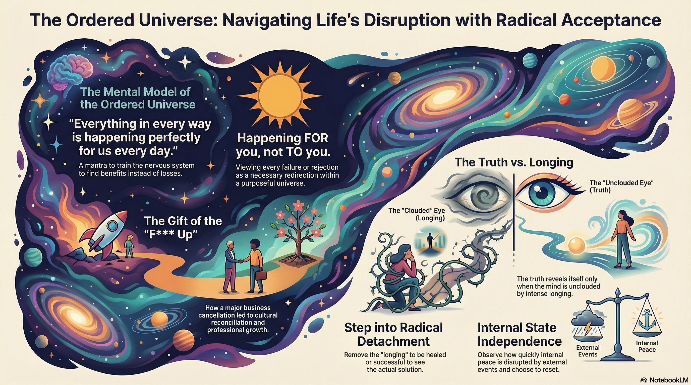

Instructor: Vishen Lakhiani
Seville, Spain — Vishen's 50th Birthday Celebration
Downloads & Resources

1. Benevolent Universe: Everything in every way happens perfectly for us every day. The universe is working FOR you, not against you.
2. Mind/Heart/Soul: When challenges arise, your mind, heart, and soul each respond differently. Notice which one you're operating from.
3. Truth & Longing: "The truth reveals itself to eyes unclouded by longing." — Emily Fletcher. Attachment prevents you from seeing reality.
4. Core Mantra: "Everything in every way happens perfectly for us every day." — Nick
Notice how each part of you responds differently to unexpected events
Logic & Frustration
"I paid $10K for this!"
"This is unfair!"
Compassion & Empathy
"I hope her stepson is okay"
"I feel for the family"
Trust & Surrender
"This is happening for a reason"
"Trust the journey"
"Everything in every way happens perfectly for us every day."— Nick (former Joe Dispenza facilitator)
The most powerful mental model for manifesting comes from Professor Srikumar Rao (Columbia Business School). His MBA course on personal mastery was the highest-rated class at Columbia, and the only one with an alumni association because the content was so transformational.
We live in a benevolent universe, and everything that is happening TO you is happening FOR you.
If you accept this, you experience a radical and complete shift. It was this mental model that helped Vishen the day he made a major cultural mistake and almost lost his company's biggest collaboration.
Nick, a former Joe Dispenza facilitator, shared his personal practice:
"Everything in every way happens perfectly for us every day. And if I see it as being perfect for me, it transforms the landscape. I immediately look at the benefit as opposed to the loss. If I repeat it, I train my subconscious and my nervous system to adjust as quickly as possible to see the benefits."
When you truly embody this belief, you stop seeing life as a series of accidents or random events. You become a co-creator with the universe.
Nick's insight: "There's no such thing as accidents in life. You are all co-creators."
When unexpected challenges arise, notice how different parts of you respond. This is the first step to conscious manifesting—understanding your own internal landscape.
When Regan had to leave due to a family emergency, Vishen used this as a live teaching moment:
When shit happens, what does your mind feel? What does your heart feel? What does your soul feel? Write this down in your journal.
"The truth reveals itself to eyes unclouded by longing."— Emily Fletcher (from The Zend)
As long as you are attached and longing for something, you close yourself off from seeing the truth. Longing creates a distortion field around reality.
Emily explains it this way: "As long as you are attached and longing for something, you will close yourself to actually witnessing the truth."
Relationship Example: If you're with someone and thinking, "I need this person. This person has to be with me all the time"—there could be a truth that the relationship is unhealthy, but you will not see it because of your longing.
In the teachings of Vadim Zeland from Reality Transurfing: "That which we long for, we create resistance to. The universe simply cannot deliver it. Therefore, one must simply push away that which one doesn't want, and gently glide toward that which one wants."
Key insight: The longing itself causes you to not see the truth. It's not about wanting less—it's about releasing the attachment to the wanting.
Four weeks before the certification, Vishen's biggest collaboration of the year—a massive event at the Museum of the Future in Dubai—was cancelled because of a cultural misunderstanding.
The same night at 11:55pm, while processing this news, Vishen's son (a math genius with 99.9 percentile SAT scores) received a rejection letter from Stanford—his dream school. Both father and son faced devastating rejections within 5 minutes of each other.
Key Insight: His son just moved on, applying to other schools. Both knew it would be okay. They trusted.
For three months, Vishen had mysterious allergic reactions—itchiness everywhere, especially bad at night. He assumed it was stress.
Three days before, while walking with friends, his friend Gita noticed: "Your face is so red—were someone kissing you?" Vishen realized he'd been unconsciously scratching his face while talking, removing skin.
Emily Fletcher guided him through a 90-minute meditation where he released his longing to solve the allergy. The goal: step into a state where he's already healed, without attachment.
After the meditation, he went to dinner. That night, an insight popped into his head: "Check your supplements."
The Lesson: His longing to be healed was preventing him from seeing the obvious truth. Once he released the longing, the insight emerged naturally.
Vishen invited 21 friends to Seville, many of whom are extraordinary teachers and practitioners. Several will be sharing wisdom throughout the certification:
Nick
Former Joe Dispenza Facilitator
Known as the "Walking Encyclopedia." Used to help facilitate Joe Dispenza retreats around the world. Shared the core mantra: "Everything in every way happens perfectly for us every day."
Emily Fletcher
Meditation Teacher, Ziva Meditation
Will be teaching the "Truth & Longing" meditation process—the same one that helped Vishen solve his allergy mystery.
Dawn Hoang
Living Spiritual Master
Labeled a master by Marie Diamond. Will be doing a Kundalini activation—a permanent shift in consciousness.
Kaitlin O'Toole
"Walking Angel"
So wise and magnetic that a video of her speaking about manifesting was retweeted by Elon Musk and got millions of views.
Tony Cho
Founder of Chosen Retreat, Miami
Grew up in an ashram, his mother was a Hindu saint. Runs a spiritual retreat where Elon Musk and Stanley have stayed. Shared a powerful story about trusting himself and creating his own path.
Ajit Nawalkha
Mindvalley Co-founder
Born in India, defied his parents' expectations for engineering to follow his calling. Shared a story about a teacher who saw his potential before he did.
Challenge Arrives
Something unexpected happens
Notice Your Response
Mind? Heart? Soul? Which is speaking?
Release Longing
Let go of attachment to outcome
Trust the Universe
"This is happening FOR me"
Truth Reveals Itself
Insights emerge, path becomes clear
"Everything in every way happens perfectly for us every day."
— Nick
"The truth reveals itself to eyes unclouded by longing."
— Emily Fletcher
"There's no such thing as accidents in life. You are all co-creators."
— Nick